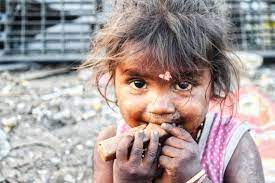

Understanding Global Food Insecurity
Food insecurity affects millions worldwide due to poverty, climate change, conflict, and unfair food systems. Let's explore why this happens and what we can do about it.
Causes of Global Food Insecurity:
- Poverty: Many can't afford nutritious food.
- Climate Change: Extreme weather harms crops.
- Conflict: Wars disrupt food access.
- Unfair Systems: Not everyone gets enough food.
Impacts of Food Insecurity:
Food insecurity impacts the human life in many ways. Lack of food affects the growth and the health of a human and it's also known as malnutrition. This can lead onto serious health problems like diabetes. And also it hurts productivity and raises costs that leads to economic losses. This also can cause social unrest for examples protest and conflict.
Solutions to Address Food Insecurity:
We can adress this food insecurity by better farming methods help during climate changes. And hosting programs like food vouchers and fundraising programs to help people in need.